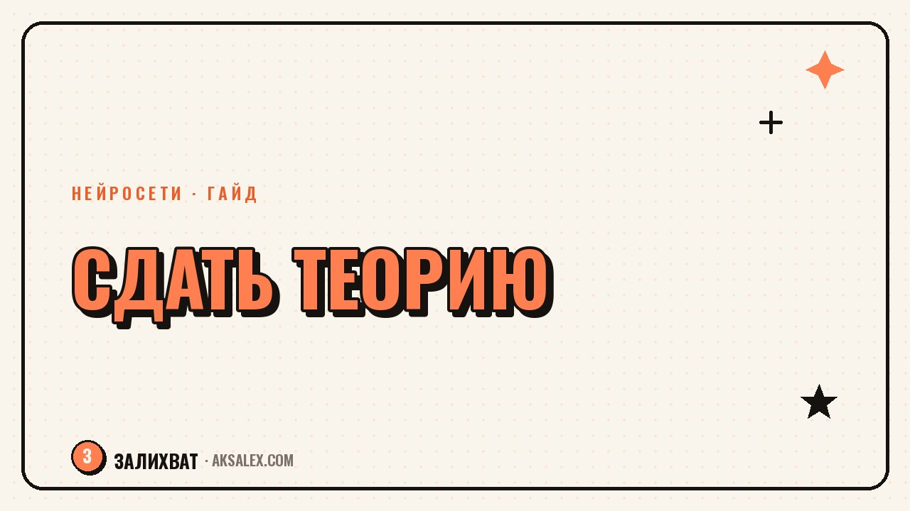

Нейросети для подготовки к экзамену в ГИБДД: как учиться быстрее

Экзаменационные билеты ПДД - это 800 с лишним вопросов, и вроде бы понятно, что надо решать их все, но на деле человек зависает на одних и тех же темах: приоритет на перекрёстках, дорожные знаки группы "предупреждающие", штрафы. Нейросеть не заменит официальное приложение с билетами ГИБДД и не должна быть единственным источником - но она отлично работает как персональный репетитор, который объясняет, почему ответ именно такой, а не какой тебе показался логичным.
Зачем вообще нейросеть, если есть приложения с билетами
Приложения с билетами ГИБДД дают правильный ответ и статистику ошибок, но почти никогда не объясняют логику. Ты видишь крестик и правильный вариант, но не понимаешь, почему твой вариант был неверным. Через пару дней та же ошибка повторяется на похожем вопросе с другой картинкой.
Нейросеть здесь работает иначе: ты присылаешь текст вопроса и варианты ответов, и просишь объяснить разницу между похожими знаками или ситуациями. Она раскладывает правило по пунктам, приводит аналогичный пример и помогает увидеть закономерность, которая потом применится к десяткам похожих вопросов.
Где нейросеть особенно выручает
- Темы с похожими картинками: знаки приоритета, временные знаки, разметка
- Задачи на очерёдность проезда перекрёстков с несколькими участниками
- Вопросы на штрафы и сроки лишения прав, где легко перепутать цифры
- Темы про буксировку, перевозку детей и груза - там много частных условий
Как разобрать сложный билет шаг за шагом
Самый рабочий способ - не просить решить весь билет целиком, а разбирать вопросы по одному, особенно те, где ты ошибся в тренировочном тесте. Открываешь билет, выписываешь текст вопроса и варианты ответа вручную (картинку со знаком описываешь словами: "главная дорога поворачивает влево, второстепенная дорога примыкает справа"), и просишь объяснить, кто проезжает первым и почему.
Пошаговый алгоритм разбора
- Выпиши вопрос и все варианты ответа текстом, без сокращений
- Спроси нейросеть объяснить правило, которое регулирует эту ситуацию
- Попроси привести похожий, но немного другой пример с другим ответом
- Сверь объяснение с официальным комментарием к билету в приложении
- Если расходится - доверяй приложению, а не нейросети, и уточни формулировку вопроса
Нейросеть - это объяснение правила, а не источник правила. Источник правды - ПДД и официальная база билетов, нейросеть просто переводит сухой текст закона на человеческий язык.
Какую нейросеть выбрать для подготовки
Для текстового разбора билетов подходит любая крупная текстовая нейросеть с доступом на русском - важно, чтобы она умела работать с условными задачами (кто кому уступает дорогу) и не путалась в терминах. Для работы с картинками знаков удобнее модель, которая принимает изображение напрямую, тогда можно просто сфотографировать билет из бумажного сборника.
| Сервис | Работа с картинкой знака | Разбор логики билета | Бесплатный доступ |
|---|---|---|---|
| ChatGPT | Да, по фото | Подробный, с разбивкой по пунктам | Есть лимитированный бесплатный |
| Яндекс Алиса/Нейро | Частично | Хорошо на русских формулировках ПДД | Бесплатно с лимитами |
| Gemini | Да, по фото | Логичный разбор, иногда суховато | Бесплатно с лимитами |
| DeepSeek | Нет фото | Неплохо на тексте, дёшево в API | Бесплатно в чате |
Если готовишься с телефона в метро или на работе в перерыве - удобнее голосовой ввод вопроса, а не набор текста: на это уходит заметно меньше времени, а нейросеть всё равно корректно распознаёт устную формулировку.
Типичные ошибки при подготовке с нейросетью
Главная ошибка - просить нейросеть решить билет целиком и просто переписывать ответы без разбора. Так ты не запомнишь логику, а на экзамене вопросы будут сформулированы немного иначе, с другими цифрами и знаками, и готовый ответ не поможет.
Вторая ошибка - слепо верить нейросети там, где она ошиблась. Модели иногда путают приоритет на равнозначных перекрёстках или забывают про временный знак, который отменяет постоянный. Поэтому финальную проверку всегда делай по официальному сборнику билетов или приложению с подтверждённой базой ГИБДД.
Что точно стоит делать
- Решать полные тренировочные билеты в официальном приложении, а нейросеть использовать только для разбора ошибок
- Делать отдельный список "трудных тем" и прогонять по нему вопросы нейросети раз в несколько дней
- Проверять спорные объяснения по тексту ПДД, а не доверять формулировке нейросети на слово
- Практиковать устный разбор вслух - проговаривая вопрос, легче запомнить правило
План подготовки на последнюю неделю перед экзаменом
За неделю до экзамена смысла проходить все билеты подряд уже мало - лучше сосредоточиться на статистике своих ошибок. Выгружаешь список тем, где чаще всего ошибаешься, и по каждой теме просишь нейросеть составить короткую памятку: правило в двух-трёх предложениях плюс пример.
В последние два дня полезно устроить "разговорный зачёт": задаёшь нейросети случайные вопросы по билетам голосом и отвечаешь вслух, а она сверяет ответ и объясняет, если ошибся. Это ближе к формату реального экзамена, где нет времени долго размышлять, и помогает снять тревожность перед тестированием.
- День 1-2: разбор всех тем, где ошибки встречались чаще двух раз
- День 3-4: памятки по сложным темам и повторное решение похожих билетов
- День 5-6: устные "блиц-опросы" с нейросетью без подглядывания в текст
- День перед экзаменом: лёгкое повторение памяток, без новых тем и стресса
Частые вопросы
Можно ли готовиться к экзамену в ГИБДД только с помощью нейросети, без официального приложения?
Нет, так делать не стоит. Нейросеть хорошо объясняет логику правил, но не гарантирует точное соответствие актуальной базе билетов ГИБДД. Основой подготовки должно быть официальное приложение или сборник билетов, а нейросеть - дополнительный инструмент для разбора сложных тем.
Как попросить нейросеть объяснить вопрос по картинке со знаком?
Если нейросеть принимает изображения, просто сфотографируй вопрос из бумажного сборника и приложи фото с просьбой объяснить ситуацию. Если модель работает только с текстом, опиши расположение знаков и дороги словами как можно подробнее, иначе объяснение получится неточным.
Почему нейросеть иногда даёт неправильный ответ на вопрос по ПДД?
Чаще всего это происходит на спорных темах: равнозначные перекрёстки, временные знаки, которые отменяют действие постоянных, и редкие исключения в правилах. Нейросеть обучена на общих текстах, а не на актуальной базе экзаменационных билетов, поэтому в сложных случаях всегда сверяйся с официальным источником.
Сколько времени нужно, чтобы подготовиться к теории с помощью нейросети?
Это зависит от того, сколько билетов ты уже прорешал самостоятельно. Если база знаний слабая, нейросеть ускорит понимание сложных тем, но не сократит время решения самих тестов. В среднем на вдумчивую подготовку с разбором ошибок уходит одна-две недели по 30-40 минут в день.
Стоит ли использовать голосовой ввод при разборе билетов с нейросетью?
Да, это удобно, особенно если готовишься в дороге или в перерыве между делами. Голосовой ввод экономит время на набор текста и помогает быстрее проговорить вопрос, что дополнительно закрепляет материал в памяти перед экзаменом.
Раз тема оказалась полезной, вот что почитать следующим. Разбираемся, почему ты обесцениваешь свои достижения и как научиться замечать сделанное.
Читать статью →а не вручную